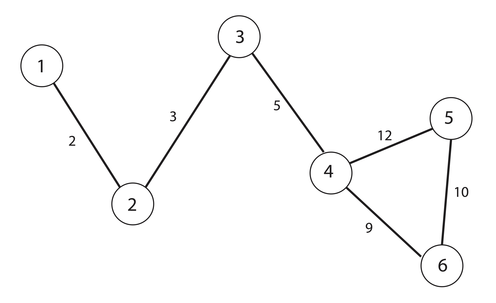

Chapter 1 Introduction
1.1 What is Linear Algebra?
At its heart, Linear Algebra is the study of linear functions. The term linear should be understood to mean straight or flat. A line on the two dimensional coordinate plane, written \[y=mx+b\] represents a linear equation - the set of points \((x,y)\) satisfying this equation form a straight line. On the other hand, a quadratic equation like \[y=ax^2+bx+c\] is nonlinear - it is not straight, it has curvature. You may have learned that the equation of a plane in 3-dimensional space (the coordinate cube \((x,y,z)\)) is written as \[ax+by+cz=d.\] Such a plane is a classic example - the set of points \((x,y,z)\) satisfying this equation form a flat surface (a plane).
A linear function involves only multiplication by scalars and addition/subtraction, for example: \[2x+3y+6z=9 \quad \mbox{or} \quad 4x_1-3x_2+9x_3+x_4-x_5+2x_6 = 2.\] The second equation above brings us to an important point: we don’t have to restrict ourselves to a 3-dimensional world. While the “flatness” of linear equations is evident when we can graph them in 2 and 3-dimensions, with 6 variables we can no longer conceptualize the “flatness” of our equation. We take on principal that the surface that contains all solutions to the equation \(4x_1-3x_2+9x_3+x_4-x_5+2x_6 = 2\) is flat, without curvature, existing in a 6-dimensional space (or higher!). You may be asking now: what is 6-dimensional space? We’ll get to the the definition of \(n\)-space soon (Definition 1.5), but it should satisfy your intuition to extend your basic notion of coordinate axes. If you have 3 variables of interest, say height, weight and circumference, you can make a 3-d scatter plot because we have 3 physical dimensions to map to each characteristic. Add in a forth variable, say cost, and suddenly we cannot physically consider the plot (because our perception is limited to 3-dimensions) but we ought to be able to suspend our disbelief and assume that a “forth axes” (forth dimension) can be considered to represent cost.
In some cases, this course will challenge you to think geometrically about data. Not in terms of the geometry you learned in high school regarding polygons and circles, but in terms of the layout and patterns of data. Linear algebra allows us to develop concepts of distance and similarity when our data has more than 3 variables and we can no longer look at a scatter plot and use our eyeballs to declare “these two observations are far away from each other.”
The second term in the phrase is, of course, algebra. While you are likely familiar with the term, this course will challenge your initial familiarity. Linear Algebra deals with the algebra of matrices, which is likely different from any algebra you’ve experienced before. For example, when given an equation for an unknown value, like \[2x=3,\] you probably immediately think “I should divide both sides by 2 to determine the unknown value x.” Our equations in this course will be quite different because the expressions will involve matrices and vectors. For example, \[\left(\begin{matrix} 2 & 3\\1&4 \end{matrix}\right) \left(\begin{matrix} x_1\\x_2 \end{matrix}\right) = \left(\begin{matrix} 5\\6 \end{matrix}\right)\] is one type of equation we will learn to solve in this course. In this situation, we cannot simply divide both sides by the left hand matrix to solve for the unknowns - in fact it should look quite confusing to consider what that would even mean!
Learning to work with matrices will be like learning a new language - the only way to succeed will be to practice and struggle and practice and struggle. Keep pace with the course and learn the terminology and definitions foremost - without the language and notation firmly in place, the techniques will seem far more difficult than they actually are.
1.2 Why Linear Algebra
If you want to understand the foundations of data science, it is imperative that you be familiar with Linear Algebra. As you’ve probably already noticed, data tends to come in rows and columns. By its very nature, data forms a matrix. A matrix is just an array of numbers, logically ordered by rows and columns. For example take the following data:
To do anything to this data, we need a way to store it mathematically. This is done by creating a matrix:
The rows of this matrix correspond to observations, in this case a sample of people for whom we have collected data. The columns of this matrix correspond to the variables we are measuring. Some manipulation and pre-processing is usually required to turn nominal/categorical/qualitative variables into numerical data, often using binary dummy variables. Most every tool in data science involves some form of linear algebra on a data matrix. In this course, we will learn some of the foundations of these tools. If you master the material in this course, you will be able to understand many more advanced data techniques as you progress through your careers. With that in mind, let’s start at the beginning.
1.3 Describing Matrices and Vectors
As we alluded to earlier, matrices are simply arrays of numbers which correspond in some way to their rows and columns. The following are examples of matrices: \[\A=\left(\begin{matrix} 1 & 2\\3&5 \end{matrix}\right) \qquad \mathbf{H}= \left(\begin{matrix} 6 & 5& 10\\0.1 & 0.5 & 0.9\\1&4&1\\1&1&1\\2&0.4&9.99 \end{matrix}\right)\]
In this text, when we denote a matrix, we will always use a bold capital letter like \(\mathbf{A}, \mathbf{M}, \mbox{or } \mathbf{D}\). To start, lets cover some basic properties and notation.
1.3.1 Dimension/Size of a Matrix
Definition 1.1 (Dimension/Size of a Matrix) The dimension of a matrix is the number of rows and number of columns in the matrix. This is sometimes referred to as the size of the matrix. We say a matrix in \(m\times n\) if it has \(m\) rows and \(n\) columns. If \(\A\) is a matrix, we might specify the dimensions of \(\A\) with a subscript: \(\A_{m\times n}\) should be read \(\A\) is an \(m\times n\) matrix.
An \(n\times n\) matrix is called a square matrix because it has the same number of rows and columns. A matrix without this characteristic is called a rectangular matrix.
Example 1.1 (Dimensions of a Matrix) Consider the data matrix presented previously, containing observations on the two variables Credit Score and Income:
\[ \A\,=\left(\begin{matrix} 780 & 95000\cr 600 & 60000\cr 550 & 65000\cr 400 & 35000\cr 450 & 40000\cr 750 & 80000\end{matrix}\right) \]
The dimension of the matrix \(\A\) is \(6\times 2\) because \(\A\) has 6 rows and 2 columns. Thus when referring to \(\A\) we might write \(\A_{6\times 2}\) when the size is important. Note that the number of rows always comes first when specifying the size of a matrix!
Exercise 1.1 (Determining dimension of a matrix) For the following matrices, determine the dimension:
\[\mathbf{B} = \left( \begin{matrix}1 & 2 & 0 \cr 2&1&0\cr3&1&1 \end{matrix}\right) \quad \mathbf{C} = \left(\begin{matrix} .01&.5&1.6&1.7\\ .1&3.5&4&2\\.61&.55&.46&.17\cr1.2&1.5&1.6&1\cr.31&.35&1.3&2.3\\2.3&3.5&.06&.7\\.3&.2&2.1&1.8\end{matrix}\right) \quad \mathbf{T} = \left(\begin{matrix} 1\cr1.3\cr0.8\cr2\cr2.5\cr0.8\cr0.9 \end{matrix} \right)\]
1.3.2 \((i,j)\) Notation
Now beyond just knowing how many rows and columns a matrix has, we frequently want to refer to a specific row or column that matrix. In Example 1.1 above, you may have noticed that the names of the individuals did not appear in our matrix - those names were merely identifiers. Of course we did not throw them away and erase them from our hard drive, we merely replaced them with an implied numerical index \(i=\{1,2,3,4,5,6\}\) that corresponds to a row of the matrix for every person. As long as we don’t reorder the rows of our matrix, we will know that the correspondence is as follows: \[\left\lbrace \begin{array}{c} row 1\\ row 2\\ row 3\\ row 4\\ row 5\\ row 6 \end{array} \right\rbrace \Longleftrightarrow \left\lbrace \begin{array}{c} John\\ Sam\\ Elena\\ Jim\\ Eric\\ Helen \end{array} \right\rbrace\]
So, if I’d like to focus on data about Eric in particular, I’d have to look no further than the \(5^{th}\) row of my matrix \(\A\). Similarly, if I want to know the Credit Scores of all individuals, I’d simply focus on the \(1^{st}\) column of the matrix. Hence, to find Eric’s Credit Score, I’d aim my sight on the element of the matrix located in the \(5^{th}\) row and \(1^{st}\) column of the matrix \(\A\).
Now, rather than write an entire sentence each time we want to refer to an individual element or row, we will develop some notation. As a general rule, the letter \(i\) is used to index the rows of a matrix and the letter \(j\) is used to index the columns.
Definition 1.2 (Notation for Elements of a Matrix) Two subscripts are used to identify individual elements of a matrix:
The element of matrix \(\A\) corresponding to row \(i\) and column \(j\) is written \(A_{ij}\)
The diagonal elements of a square matrix are those that have identical row and column indices: \(\A_{ii}\)
Beyond these basic conventions, there are other common notational tricks that we will become familiar with. The first of these is writing a partitioned matrix. We will often want to consider a matrix as a collection of either rows or columns rather than individual elements. As we will see in the future, when we partition matrices in this form, we can view their multiplication in simplified form. This often leads us to a new view of the data which can be helpful for interpretation.
When we write \(\A=( \A_1 | \A_2 | \dots | \A_n )\) we are viewing the matrix \(\A\) as collection of column vectors, \(\A_i\), in the following way: \[\A=( \A_1 | \A_2 | \dots | \A_n )=\left(\begin{matrix} \uparrow & \uparrow &\uparrow&\dots & \uparrow \\ \A_1&\A_2&\A_3&\dots&\A_p \\ \downarrow &\downarrow &\downarrow &\dots&\downarrow \end{matrix}\right) \]
Similarly, we can write \(\A\) as a collection of row vectors: \[\A=\left(\begin{matrix} \A_1 \\ \A_2 \\ \vdots \\ \A_m \end{matrix}\right) = \left(\begin{matrix} \longleftarrow & \A_1 & \longrightarrow \\ \longleftarrow & \A_2 & \longrightarrow \\ \vdots & \vdots & \vdots \\ \longleftarrow & \A_m & \longrightarrow \end{matrix}\right)\]
Sometimes, we will want to refer to both rows and columns in the same context. The above notation is not sufficient for this as we have \(\A_j\) referring to either a column or a row. In these situations, we may use \(\A_{\star j}\) to reference the \(j^{th}\) column and \(\A_{i \star}\) to reference the \(i^{th}\) row:
\[\bordermatrix{\blue{\acol{1}}&\acol{2}&\dots&\dots &\acol{n}}{~\\~\\~\\~\\~}{\pm \blue{a_{11}} & a_{12} &\dots & \dots & a_{1n} \\ \blue{\vdots} & \vdots & & & \vdots \\ \blue{a_{i1}} & \dots& a_{ij} & \dots & a_{in}\\ \blue{\vdots} & \vdots & & & \vdots \\ \blue{a_{m1}} & \dots& \dots & \dots & a_{mn} \mp}\] \[\bordermatrix{&&&&&}{\blue{\arow{1}} \\\vdots \\ \arow{i} \\ \vdots \\\arow{m}}{\pm \blue{a_{11}} & \blue{a_{12} }&\blue{\dots} & \blue{\dots} & \blue{a_{1n}} \cr \vdots& \vdots & & & \vdots \cr a_{i1} & \dots& a_{ij} & \dots & a_{in}\cr \vdots & \vdots & & & \vdots \cr a_{m1} & \dots& \dots & \dots & a_{mn} \mp}\]
Definition 1.3 (Rows and Columns of a Matrix) To refer to entire rows or columns, a placeholder \(\star\) is often used to represent the idea that we take all rows or columns after narrowing in on a given column or row respectively:
To refer to the \(k^{th}\) row of \(\A\) we will use the notation \(\arow{k}\) (“$k^{th} row, all columns”)
Similarly, to refer to the \(k^{th}\) column of \(\A\) we will use the notation \(\acol{k}\).
Often, when there is no confusion about whether we are referring to rows or columns, the above notation will be shortened to simply \(\A_k\). In such a scenario it will be made clear from context whether this represents the \(k^{th}\) row or \(k^{th}\) column. For example, \[\A=( \A_1 | \A_2 | \dots | \A_n )\] represents a matrix \(\A\) with \(n\) columns \(\{\A_1,\A_2,\dots,\A_n\}\).
:::{.example name=‘Rows, Columns, and Elements of a Matrix’ #ijnot}
Consider the following table of data and corresponding data matrix:| Obs. | Height (in.) | Weight (lbs.) | Age |
| 1 | 63 | 120 | 23 |
| 2 | 69 | 170 | 30 |
| 3 | 72 | 190 | 41 |
| 4 | 64 | 150 | 27 |
| 5 | 64 | 175 | 35 |
| 6 | 68 | 165 | 25 |
| 7 | 70 | 180 | 21 |
\[\mathbf{B}= \left(\begin{matrix}63 & 120 & 23\\ 69 & 170 & 30\\ 72 & 190 & 41\\ 64 & 150 & 27\\ 64 & 175 & 35\\ 68 & 165 & 25\\ 70 & 180 & 21\end{matrix}\right)\]
Element \(B_{42}=150\) corresponds to the weight (second column) of observation 4 (forth row).
The column \[\bcol{3} = \left(\begin{matrix} 23\\30\\41\\27\\35\\25\\21 \end{matrix}\right)\] corresponds to the variable age and the row \[\brow{6} = \left(\begin{matrix} 68&165&25 \end{matrix}\right)\] corresponds to the measurements for observation 6. :::
Exercise 1.2 (Rows, Columns, and Elements of a Matrix) For the matrix \[ \mathbf{L}=\left(\begin{matrix} 3 & -6 & -2\\1 & -4 & 5\\0 & 4 & -5 \end{matrix}\right)\] Write the following elements, rows, or columns: \[L_{23}= \qquad\qquad L_{31}= \qquad\qquad \mathbf{L}_{\star 2}= \qquad\qquad \mathbf{L}_{1 \star}=\qquad\qquad\]
Definition 1.4 (Equality of Matrices) Two matrices are equal if and only if they have the same size and all of their corresponding entries are equal. That is, \[\A=\B \Longleftrightarrow A_{ij} = B_{ij} \quad \mbox{for all i and j}\]
Example: Defining social networks
One advantage to using (i,j)-notation is that it allows us to define an entire matrix by describing one arbitrary element according to its row (\(i\)) and column (\(j\)). Let’s consider a classic example from network analysis. Suppose we have a group of 6 students and we want to examine how often they have worked together in teams. Rather than use the students names, let’s just number them Student 1 through Student 6. These students were put into teams in the summer semester and then reassigned to new teams for the fall and the spring semester:
Now, we can define what is called an adjacency or association matrix for this data as follows:
\[\A_{ij} =\left\{ \begin{array}{l} \mbox{# of times Student i has worked with Student j}\,\,\,\mbox{if } i\neq j\\ 0 \,\,\,\mbox{ if } i=j \end{array} \right.\]
Breaking apart this matrix definition, we see both the rows (indexed by \(i\)) and columns (indexed by \(j\)) will correspond to students. For example, the element in the \(2^{nd}\) row and \(3^{rd}\) column, (\(A_{23}\)), will be the number of times Student 2 has worked with Student 3. Thus, \[A_{23}=2.\] When the row and column numbers are the same (\(i=j\)), which happens along the diagonal of the matrix, the entries will be 0 (this number was chosen arbitrarily - one could also use `3’ along the diagonal). The result is a square matrix with 6 rows and columns: \[\A=\left(\begin{matrix} 0&2&1&1&1&1\\2&0&2&2&0&0\\1&2&0&1&1&1\\1&2&1&0&1&1\\1&0&1&1&0&3\\1&0&1&1&3&0\end{matrix}\right)\] We can quickly see that there is symmetry in this matrix because the number of times Students \(i\) and \(j\) worked together is, of course, the same as the number of times Students \(j\) and \(i\) worked together. Formally, a matrix is called symmetric if \(A_{ij}=A_{ji}\) (this important concept is formalized in Definition 1.7. We can also see straight from this matrix that Students 5 and 6 worked together every semester while neither of them worked with Student 2 at all.
An adjacency matrix like the one listed above is often used to describe a network or graph. A graph is a collection of vertices (nodes) that each represent some entity, and edges which connect vertices that are related in some way.
Below is a network of the students, where the thickness of the edge between two vertices indicates the number of times they have worked together.

Figure 1.1: Network of Student Team Membership
If we had chosen to put 3’s along the diagonal, each vertex in this graph would have a bold edge that loops back to itself. Graphs and the adjacency matrices which define them are at the heart of many problems in social network analysis. For example, websites like Facebook and LinkedIn are just enormous networks of nodes (individual users) connected by edges (“friendships” or “connections”). In the case of Twitter, the network is even more complicated because the relationships are directed: the “follower” connection is not symmetric, the people I “follow” do not have to follow me back. We may have a chance to discuss more of this later; in general, it makes the analysis much more difficult!
1.3.3 Example: Correlation matrices
When we have several variables to analyze, it is good practice to measure the pairwise correlations between variables. Suppose we have 4 variables, \(x_1, x_2, x_3,\,\mbox{and}\, x_4\). We will often examine the correlation matrix, \(\C\), which is defined as follows: \[\C_{ij}=correlation(x_i,x_j).\] For example, suppose our correlation matrix is as follows: \[\C=\left(\begin{matrix} 1 & 0.3 & -0.9 & 0.1\\0.3 & 1 & 0.8 & -0.5\\-0.9&0.8&1&-0.6\\0.1&-0.5&-0.6&1 \end{matrix}\right)\]
It is clear that the diagonal elements of this matrix, \(C_{ii}\), should always equal 1 because every variable is perfectly correlated with itself. We can also see that
\[C_{ij}=C_{ji}\quad \mbox{Because }\,correlation(x_i,x_j)=correlation(x_j,x_i)\] And in this particular example, \[C_{13}=-0.9 \quad \mbox{Indicates that }\,x_1\,\,\mbox{and}\,\,x_3\,\,\mbox{have a strong negative correlation.}\]
1.4 Vectors
Now that we’ve introduced the concept of a matrix, let’s talk about vectors. A vector are merely a special type of matrix, one that consists of only a single row or column. They are essentially ordered lists of numbers. For example:
\[\x=\left(\begin{matrix} 5\\6\\7\\8 \end{matrix}\right) \qquad \mathbf{z}=\left(\begin{matrix} 3 & 5 & 1 & 0 & 2 \end{matrix}\right) \qquad \y = \left(\begin{matrix} y_1\\y_2\\y_3 \end{matrix}\right)\] are all examples of vectors; \(\x\) and \(\y\) are column vectors and \(\mathbf{z}\) is a row vector. In this text, to denote a vector we will always use a bold lower-case letter like \(\x, \y, \mbox{or } \mathbf{a}\). Since vectors only have one row or column, we do not need two subscripts to refer to their elements - we can use a single subscript to refer to the elements, as shown in the vector \(\y\). Thus, \(x_3\) refers to the \(3^{rd}\) element in the vector \(\x\) above: \[x_3 = 7.\] Notice that the elements of a vector are not written in bold. In fact, all scalar quantities (a quantity that is just a single number (like 2 or \(\sqrt{5}\)), not a matrix) will be represented by unbolded, usually lowercase (often greek) letters. For example, letters like \(\alpha, \beta, x_i, \mbox{or } a\) will be used to refer to scalars.
You may wonder now why the notation is so particular, but as we get into the subject it will be come clear that some convention must be retained if we are going to understand an equation. If we write an equation like \[\A\x=\b \qquad \mbox{or} \qquad \mathbf{M}\y=\alpha\y\] We have to know what it represents - in the first case, we are dealing with a matrix \(\A\), and two vectors \(\x\) and \(\b\); in the second case we are dealing with a matrix \(\mathbf{M}\), a vector \(\y\), and a scalar, \(\alpha\).
Exercise 1.3 (Matrix, Vector, and Scalar Notation) For the following quantities, indicate whether the notation indicates a Matrix, Scalar, or Vector. \[\A \qquad \qquad A_{ij} \qquad \qquad \v \qquad \qquad p_2 \qquad \qquad \lambda \qquad \qquad \p_2\]
In the previous exercise, we see an important difference: \(p_2\) is not bold, and thus is automatically assumed to a scalar, while \(\p_2\) is bold and lowercase meaning, despite the subscript, it refers to a vector.
1.4.1 Vector Geometry: \(n\)-space
You are already familiar with the concept of “ordered pairs” or coordinates \((x_1,x_2)\) on the two-dimensional plane (in Linear Algebra, we call this plane “\(2\)-space”). Fortunately, we do not live in a two-dimensional world! Our data will more often consist of measurements on a number (lets call that number \(n\)) of variables. Thus, our data points belong to what is known as \(n\)-space. They are represented by \(n\)-tuples which are nothing more than ordered lists of numbers: \[(x_1, x_2, x_3, \dots, x_n).\] An \(n\)-tuple defines a vector with the same \(n\) elements, and so these two concepts should be thought of interchangeably. The only difference is that the vector has a direction (usually depicted with an arrow), away from the origin and toward the \(n\)-tuple. This concept is obviously very difficult to visualize when \(n>3\), but our mental visualizations of \(2-\) and \(3-\)space will usually be sufficient when we want to consider higher dimensional spaces.
You will recall that the symbol \(\Re\) is used to denote the set of real numbers. \(\Re\) is simply \(1\)-space. It is a set of vectors with a single element. In this sense any real number, \(x\), has a direction: if it is positive, it is to one side of the origin, if it is negative it is to the opposite side. That number, \(x\), also has a magnitude: \(|x|\) is the distance between \(x\) and the origin, 0.
Definition 1.5 (n-space) \(n\)-space (the set of real \(n\)-tuples) is denoted \(\Re^n\). In set notation, the formal mathematical definition is simply: \[\Re^n = \left\lbrace (x_1,x_2,\dots,x_n) : x_i \in \Re, i=1,\dots, n\right\rbrace.\]
We will often use this notation to define the size of an arbitrary vector. For example, \(\x \in \Re^p\) simply means that \(\x\) is a vector with \(p\) entries: \(\x=(x_1,x_2,\dots,x_p)\).
Many (all, really) of the concepts we have previously considered in \(2\)- or \(3\)-space extend naturally to \(n\)-space and a few new concepts become useful as well. One very important concept is that of a norm or distance metric, as we will see in Chapter 6. Before we get into the details of the vector space model, let’s continue with some of the basic definitions we will need on that journey.
1.5 Matrix Operations
1.5.1 Transpose
One important transformation we will have to perform on a matrix is to switch the columns into rows. It is not necessary that you see the importance of this transformation right now, but trust that it is something we will need quite frequently.
Definition 1.6 (Transpose of a Matrix or Vector) For a given \(m\times n\) matrix \(\A\), the transpose of \(\A\), written \(\A^T\) (read as “\(\A\)-transpose”) in this course and sometimes elsewhere denoted as \(\A'\) is the \(n\times m\) matrix whose rows are the corresponding columns of \(\A\).
Thus, if \(\A\) is a \(3\times 4\) matrix then \(\A^T\) is a \(4\times 3\) matrix as follows: \[\A = \left(\begin{matrix} A_{11} & A_{12} & A_{13} &A_{14}\\ A_{21} & A_{22} & A_{23} &A_{24}\\ A_{31} & A_{32} & A_{33} &A_{34}\end{matrix}\right) \quad \A^T = \left(\begin{matrix} A_{11} & A_{21} & A_{31}\\A_{12} & A_{22} & A_{32}\\A_{13} & A_{23} & A_{33}\\A_{14} & A_{24} & A_{34}\end{matrix}\right)\]
An equivalent way to state this definition is to say that \[(A^T)_{ij} = A_{ji}\] Note: If we transpose the transpose of a matrix, we will get back the original matrix. That is, \[(\A^T)^T = \A.\]
Example 1.3 (Transpose of a Matrix or Vector) For the following matrices and vectors, determine the transpose: \[\B=\left(\begin{matrix} 2 & -3 & -4 \\5&-6&-7\\-8&9&0 \end{matrix}\right) \qquad \mathbf{M}=\left(\begin{matrix} -1&2\\-3&6\\7&-9\\5&-1 \end{matrix}\right) \qquad \x=\left(\begin{matrix}3\\-4\\5\\6\end{matrix}\right)\] To find the transpose, we simply create new matrices whose rows are the corresponding columns of each matrix or vector: \[\B^T=\left(\begin{matrix} 2 &5& -8\\-3&-6&9\\-4&-7&0\end{matrix}\right) \qquad \mathbf{M}^T = \left(\begin{matrix}-1&-3&7&5\\2&6&-9&-1 \end{matrix}\right) \] \[\x^T = \left(\begin{matrix} 3&-4&5&6 \end{matrix}\right)\]
Definition 1.7 (Symmetric Matrix) Defining the matrix transpose allows us to define the notion of a symmetric matrix. A matrix \(\A\) is called symmetric if and only if \[\A=\A^T.\] This is equivalent to saying that \(\A\) is symmetric if and only if \[A_{ij}=A_{ji}.\] It should be clear from the definition that in order for \(\A\) to be a symmetric matrix, it must be a square matrix - otherwise \(\A\) and \(\A^T\) would not even have the same size!
Example 1.4 (Symmetric Matrices) The following matrix is symmetric because \(\B^T = \B\). \[\B=\left(\begin{matrix} 2 & 0 & 1 \\0&-6&-7\\1&-7&0 \end{matrix}\right)\]
Exercise 1.4 (Transpose and Symmetry) Given that, \[\A=\left(\begin{matrix} 2 & -4 \\-1&2\\3&-6 \end{matrix}\right) \quad \v^T = \left(\begin{matrix} 1 & 0 & -2 & 5\end{matrix}\right) \quad \B=\left(\begin{matrix} B_{11}&B_{12}&B_{13}\\B_{21}&B_{22}&B_{23}\\B_{31}&B_{32}&B_{33}\\B_{41}&B_{42}&B_{43}\end{matrix}\right)\] compute the following matrices: \[\A^T= \qquad \qquad \qquad \qquad (\A^T)^T= \qquad \qquad \qquad \qquad\] \[ \v= \qquad \qquad \qquad \qquad \B^T = \qquad \qquad\qquad \qquad \]
Give an example of a \(4\times 4\) symmetric matrix:
Is a correlation matrix symmetric? (For a hint, see section 1.3.3)
1.5.2 Trace of a Matrix
Another important matrix operation that will come into play later is the trace of a matrix. The trace of a square matrix is the sum of the diagonal elements of this matrix.
Definition 1.8 (Trace of a Matrix) For an \(n\times n\) square matrix, \(\A\), the trace of \(\A\), written \[trace(\A)\,\,\,\mbox{or}\,\,\,tr(\A)\] is the sum of the diagonal elements: \[tr(\A)=\sum_{i=1}^n A_{ii}\]
The trace of a rectangular matrix is undefined.
Example 1.5 (Trace of a Matrix) Let \[\A=\left(\begin{matrix} 3&4&1\\0&1&-2\\-1&\sqrt{2}&3\end{matrix}\right)\] Then, the trace of \(\A\) is the sum of the diagonal elements: \[tr(\A)=\sum_{i=1}^3 A_{ii} = 3+1+3 = 7.\]
While we’re on the subject of diagonal elements, let’s take the opportunity to introduce some special types of matrices, namely the identity matrix and a diagonal matrix.
1.6 Special Matrices and Vectors
Definition 1.9 (Identity Matrix) The bold capital letter \(\mathbf{I}\) will always to denote the identity matrix. Sometimes this matrix has a single subscript to specify the size of the matrix. More often, the size of the identity is implied by the matrix equation in which it appears. \[\mathbf{I}_4 = \left(\begin{matrix} 1 & 0 & 0 & 0 \\ 0 & 1 & 0 & 0\\ 0&0&1&0\\ 0&0&0&1 \end{matrix}\right)\]
Definition 1.10 (Elementary Vectors) The bold lowercase \(\mathbf{e}_j\) is used to refer to the \(j^{th}\) column of \(\mathbf{I}\). It is simply a vector of zeros with a one in the \(j^{th}\) position. We do not often specify the size of the vector \(\mathbf{e}_j\), the number of elements is generally assumed from the context of the problem.
\[\mathbf{e}_j=\begin{matrix} \begin{matrix} ~ \\~\\~\\~\\j^{th}\text{row} \rightarrow \\ ~\\~\\~ \end{matrix} & \begin{pmatrix}0\\0\\ \vdots \\0\\1\\0\\ \vdots\\0\end{pmatrix}\\\\ \end{matrix}\]
The vector \(\mathbf{e}\) with no subscript refers to a vector of all ones. In some texts, this vector is written as a bold faced \(\textbf{1}\).
\[\mathbf{e} = \left(\begin{matrix} 1\\1\\1\\ \vdots \\ 1\end{matrix}\right)\]
The elementary vectors described in Definition 1.10 create the coordinate axes of \(n\)-space. For illustrative purposes, let’s consider \(2\)-space. The elementary vectors in \(2\)-space are: \[\e_1 = \left(\begin{matrix} 1\\0\end{matrix}\right) \quad \mbox{and} \quad \e_2 = \left(\begin{matrix} 0\\1 \end{matrix}\right) \] These vectors correspond to the directions of the coordinate axes as illustrated in Figure 1.2
Figure 1.2: Elementary cectors represent our “usual” coordinate axes
Definition 1.11 (Diagonal Matrix) A diagonal matrix is a matrix for which off-diagonal elements, \(\A_{ij},\,i\ne j\) are zero. For example: \[\mathbf{D} = \left(\begin{matrix} \sigma_1 & 0 & 0 & 0 \\ 0 & \sigma_2 & 0 & 0\\ 0&0&\sigma_3&0\\ 0&0&0&\sigma_4 \end{matrix}\right)\] Since the off diagonal elements are 0, we need only define the diagonal elements for such a matrix. Thus, we will frequently write \[\mathbf{D}=diag\{\sigma_1,\sigma_2,\sigma_3,\sigma_4\}\] or simply \[D_{ii} = \sigma_i.\]
From the preceding definitions, it should be clear that diagonal and identity matrices are always square, meaning they have the same number of rows and columns, and {symmetric}, meaning they do not change under the transpose operation.
Exercise 1.5 (Trace and Special Matrices) Write out the following matrices and then compute their Trace, if possible:
\[\I_5 \qquad \mathbf{D}=diag\{2,6,1\} \qquad \e_2 \in \Re^4\]
Definition 1.12 (Triangular Matrices) Triangular matrices are square matrices whose elements are zero either below or above the main diagonal. If the matrix has zeros below the main diagonal, then it’s called upper triangular. The following illustration depicts an upper triangular matrix, where the asterisk symbol is used to denote any number (including potential zeros). \[\left(\begin{matrix} *&*&*&\dots&*\\0&*&*&\dots&*\\0&0&*&\dots&*\\ \vdots &\vdots &\ddots &\ddots&*\\0&0&0&0&*\end{matrix}\right)\]
If a matrix has zeros above the main diagonal, then it’s called lower triangular. The following illustration depicts a lower triangular matrix. \[\left(\begin{matrix} 0&0&0&\dots&0\\ *&0&0&\dots&0\\ *&*&0&\dots&0\\ \vdots &\vdots &\ddots &\ddots&0\\ *&*&*&*&0\end{matrix}\right)\]
Exercise 1.6 (Triangular Matrices) The following are examples of triangular matrices. Are they upper or lower triangular?
\[\left(\begin{matrix} 1&2&3&4\\0&5&6&7\\0&0&8&9\\0&0&0&1 \end{matrix}\right) \quad \left(\begin{matrix} -1&0&0\\0&-2&0\\1&-1&2 \end{matrix}\right) \quad \left(\begin{matrix} 0&0&0\\0&0&0\\0&0&0 \end{matrix}\right)\]
1.7 Summary of Conventional Notation
Linear Algebra has some conventional ways of representing certain types of numerical objects. Throughout this course, we will stick to the following basic conventions:
- Bold and uppercase letters like \(\A\), \(\X\), and \(\U\) will be used to refer to matrices.
- Occasionally, the size of the matrix will be specified by subscripts, like \(\A_{m\times n}\), which means that \(\A\) is a matrix with \(m\) rows and \(n\) columns.
- Bold and lowercase letters like \(\x\) and \(\y\) will be used to reference vectors. Unless otherwise specified, these vectors will be thought of as columns, with \(\x^T\) and \(\y^T\) referring to the row equivalent.
- The individual elements of a vector or matrix will often be referred to with subscripts, so that \(A_{ij}\) (or sometimes \(a_{ij}\)) denotes the element in the \(i^{th}\) row and \(j^{th}\) column of the matrix \(\A\). Similarly, \(x_k\) denotes the \(k^{th}\) element of the vector \(\x\). These references to individual elements are not generally bolded because they refer to scalar quantities.
- Scalar quantities are written as unbolded greek letters like \(\alpha\), \(\delta\), and \(\lambda\).
- The notation \(\x \in \Re^n\) simply means that \(\x\) is a vector in \(n\)-space, or a vector with \(n\) elements.
- The transpose of an \(m\times n\) matrix \(\A\) is the \(n\times m\) matrix \(\A^T\) whose rows are the columns of \(\A\).
- The trace of a square matrix \(\A_{n\times n}\), denoted \(Tr(\A)\) or \(Trace(\A)\), is the sum of the diagonal elements of \(\A\), \[Tr(\A)=\sum_{i=1}^n A_{ii}.\]
1.8 Exercises
-
Use the following matrices or vectors to answer the following questions: \[\begin{equation*} \mathbf{A}=\left(\begin{array}{ccc} 1&3&8\\3&0&-2\\4&1&-3 \end{array}\right) \quad \mathbf{M}=\left(\begin{array}{cccc} 1&8&-2&5\\2&8&1&7 \end{array}\right) \quad \mathbf{D} = \left(\begin{array}{ccc} 1&0&0\\0&5&0\\0&0&3\end{array}\right) \end{equation*}\] \[\begin{equation*} \mathbf{X}=\left(\begin{array}{cc} 780 & 95000\\600 & 60000\\550 & 65000\\400 & 35000\\450 & 40000\\750 &80000\end{array}\right) \quad \mathbf{t} = \left(\begin{array}{c} 1\\1.3\\0.8\\2\\2.5\\0.8\\0.9 \end{array}\right) \quad \mathbf{v}=\left(\begin{array}{c} 6\\3\\-1\\2\end{array}\right) \quad \mathbf{u}=\left(\begin{array}{cccc} 6&4&8&1\end{array}\right) \end{equation*}\]
-
Write the appropriate size/dimensions next to each matrix:
-
\(\mathbf{A}\)
-
\(\mathbf{M}\)
- \(\mathbf{D}\)
-
\(\mathbf{X}\)
-
\(\mathbf{t}\)
-
\(\mathbf{v}\)
-
\(\mathbf{u}\)
-
\(\mathbf{A}\)
-
Which of these matrices are square? Which are rectangular?
-
Give the following quantities:
-
\(A_{12}=\)
-
\(M_{21}=\)
-
\(\D_{\star3}=\)
-
\(\mathbf{M}_{2\star}=\)
-
\(X_{42}=\)
-
\(t_5=\)
-
\(v_3=\)
-
\(A_{12}=\)
- What are the diagonal elements of \(\A\)?
-
Write the appropriate size/dimensions next to each matrix:
-
For each of the following matrices and vectors, give their dimension. Label each as a matrix or vector. For each matrix, indicate whether the matrix is square or rectangular.
-
\[\A=\left(\begin{matrix} 2 & 3 & -1\\1&-1&1\\2&2&1 \end{matrix}\right)\]
-
\[\mathbf{h}=\left(\begin{matrix} -1\\-4\\1\\2 \end{matrix}\right)\]
-
\[\B=\left(\begin{matrix} B_{11}&B_{12}&B_{13}\\B_{21}&B_{22}&B_{23}\\B_{31}&B_{32}&B_{33}\\B_{41}&B_{42}&B_{43}\end{matrix}\right)\]
-
\[\C=\left(\begin{matrix} 1 & 0.3 & -0.9 & 0.1\\0.3 & 1 & 0.8 & -0.5\\-0.9&0.8&1&-0.6\\0.1&-0.5&-0.6&1 \end{matrix}\right)\]
-
\[\A = [A_{ij}] \quad \mbox{where } i=1,2,3 \quad \mbox{and } j=1,2\]
-
\[\A=\left(\begin{matrix} 2 & 3 & -1\\1&-1&1\\2&2&1 \end{matrix}\right)\]
-
For the following quantities, use what you know about notation to tell if they are matrices, vectors, or scalars:
-
\(\mathbf{H}\)
-
\(\mathbf{W}\)
-
\(n\)
-
\(\v_2\)
-
\(v_2\)
-
\(\mathbf{M}_{\star 2}\)
-
\(\lambda\)
-
\(A_{ij}\)
-
\(\mathbf{r}\)
-
\(\mathbf{H}\)
-
The matrix \(\C\) from exercise 2d is the correlation matrix discussed earlier in this chapter. What is the trace of \(\C\)? For any correlation matrix computed using \(p\) variables, what should we expect the trace to be?
-
If \[\v^T = \left(\begin{matrix} 1&6&-1&\sqrt{2} \end{matrix}\right),\] then what is \(\v\)?
-
For each of the following, write the vector or matrix that is specified:
- \(\e_3 \in \Re^4\)
- \(\D=diag\{2, \sqrt{3}, -1\}\)
- \(\e \in \Re^3\)
- \(\I_2\)
-
How do you know if a matrix is symmetric? Give an example of a symmetric matrix.
-
Give an example of a \(4\times 4\) upper triangular matrix and a \(3\times 3\) lower triangular matrix.
-
Suppose we measure the heights of 10 people, \(person_1, person_2, \dots, person_{10}\).
-
If we define a matrix \(\S\) as
\[S_{ij} = height(person_i) - height(person_j)\]
is the matrix \(\S\) symmetric? What is the trace(\(\S\))?
-
If instead we create a matrix \(\mathbf{G}\) where
\[G_{ij} = [height(person_i) - height(person_j)]^2\]
is the matrix \(\mathbf{G}\) symmetric? What is the trace(\(\mathbf{G}\))?
-
If we define a matrix \(\S\) as
\[S_{ij} = height(person_i) - height(person_j)\]
is the matrix \(\S\) symmetric? What is the trace(\(\S\))?
-
Refer to the network/graph shown below. This particular network has 6 numbered vertices (the circles) and edges which connect the vertices. Each edge has a certain {weight} (perhaps reflecting some level of association between the vertices) which is given as a number.
-
Use the network shown below to answer the following questions.
Figure 1.3: Graph (Network) for exercise 11
-
Write down the adjacency matrix, \(\A\), for this graph where \(\A_{ij}\) reflects the weight of the edge connecting vertex \(i\) and vertex \(j\).
-
The degree of a vertex is defined as the sum of the weights of the edges connected to that vertex. Create a vector \(\mathbf{d}\) such that \(d_i\) is the degree of node \(i\).
-
Write down the adjacency matrix, \(\A\), for this graph where \(\A_{ij}\) reflects the weight of the edge connecting vertex \(i\) and vertex \(j\).